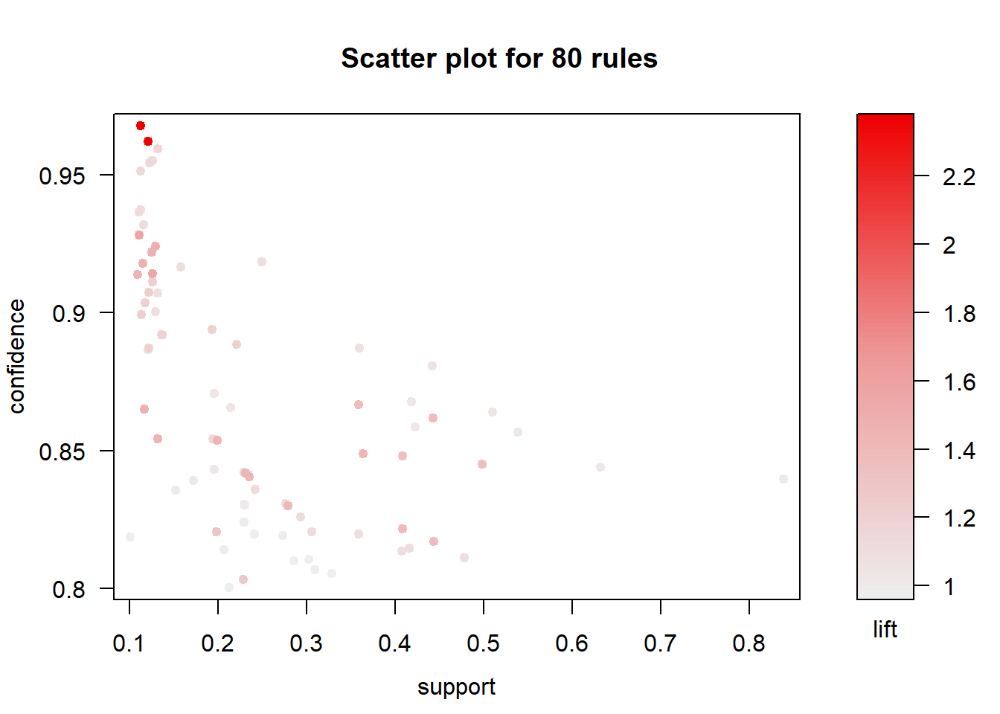
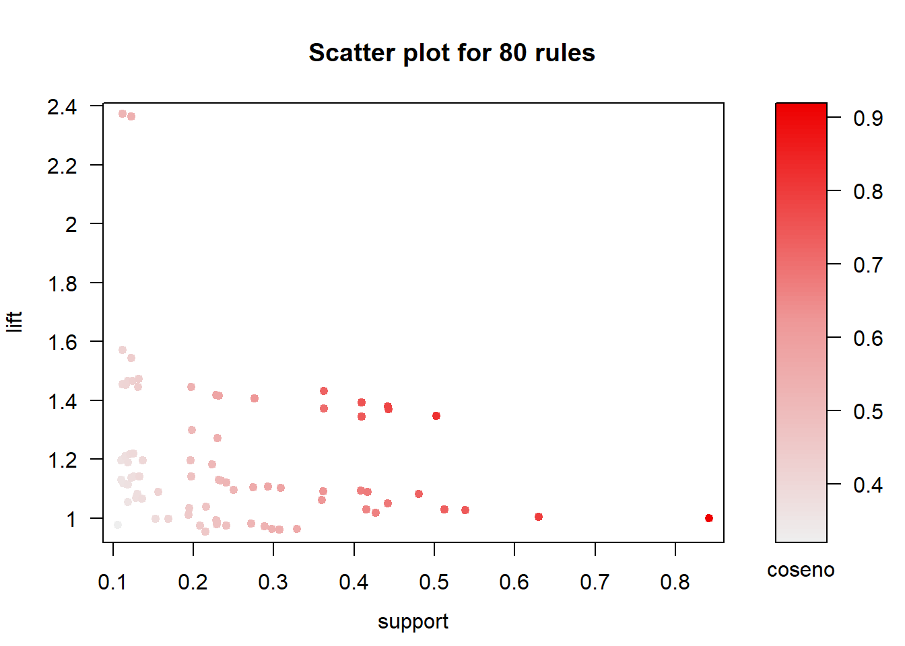
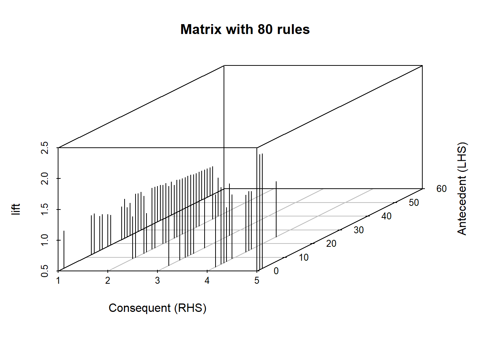
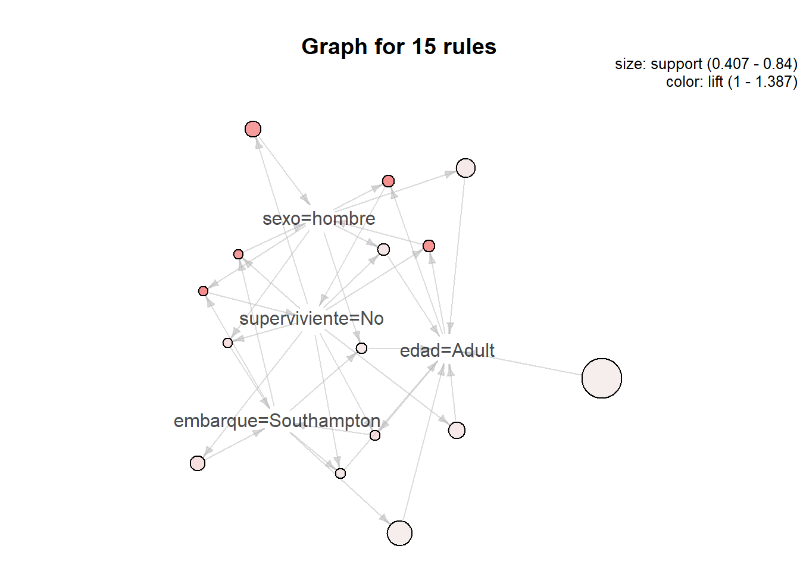

Reglas de asociación
José Tomás Palma Méndez
5 de abril de 2022
1 Introducción
En esta sesión prácticas vamos a ver cómo vamos a trabajar con reglas de asociación. Para ello vamos a utilizar los paquetes: arulesy arulesViz:
library(arules)## Loading required package: Matrix##
## Attaching package: 'arules'## The following object is masked from 'package:car':
##
## recode## The following objects are masked from 'package:base':
##
## abbreviate, writelibrary(arulesViz)## Loading required package: grid## Registered S3 method overwritten by 'seriation':
## method from
## reorder.hclust gclus2 Manipulación de conjuntos de datos
El paquete arules nos ofrece diferentes funciones que permiten leer y escribir bases de datos de transacciones: read.transactions() y write(). La función read.transactions() nos permite leer ficheros de transacciones en los dos formatos que comúnmente se suelen utilizar: una transacción por linea (cesta de la compra) o una linea por artículo o item. Esta función tiene los siguientes parámetros:
- file: nombre del fichero a leer.
- format string indicando el formato de la base de datos de transacciones,
basketosingle. - sep: para indicar qué carácter hace de separador de los campos (por defecto un espacio).
- cols: para el formato
basketes un entero indicando la columna que contiene los identificadores de las transacciones. Para el formatosinglepueden sor los nombres de las dos columnas, o dos números indicando cuál es la columna con las transacciones y cuál con los items, respectivamente. - rm.duplicates: valor lógico indicando si se eliminan los items duplicados en una misma transacción.
- quote: caracter que se utiliza como comillas.
- skip: número de líneas que hay que saltar desde el comienzo del fichero.
Por ejemplo, si queremos leer un fichero con el formato cesta de la compra, bastaría con la siguiente instrucción:
transacciones <- read.transactions("1000i.csv", format = "basket",
sep = "," , rm.duplicates = TRUE)Donde el objeto transacciones es de tipo transactions.
Ejercicio 1: Examina el contenido de los ficheros titanic1 y titanic2:
- ¿En qué formato están almacenados los datos en cada fichero?
- Crea dos objetos llamados
titanic.basketytitanic.singleque contengan los datos de los ficheros anteriormente mencionados.
Además de poder leer bases de datos de transacciones a través de la función read.transactions(), el paquete arules nos permite transformar un objeto de la clase data.frame en un objeto de la clase transactions. Por ejemplo, si queremos convertir el data frame tabla en un objeto de la clase transactions podemos utilizar la siguiente instrucción:
mush <- read.csv("mushrooms.data")
mush.trans <- as(mush,"transactions")Los objetos de la clase transactions sólo trabajan con información booleana, es decir, con la presencia o no de cada uno de los items en la transacción. Esto nos obliga a qué, en principio, el data.frame sólo contenga atributos booleanos. Por lo tanto, si tenemos datos numéricos estos deben ser discretizados. Una vez discretizados, estos atributos y los categóricos son transformados automáticamente meidante la creación de las corresondientes variables dummies. Por ejemplo, si tenemos un atributo fiebre que puede tomar los valores alta, normal y baja, se crearan los siguientes atributos binarios: fiebre=alta, fiebre=normal y fiebre=baja.
Para poder discretizar un atributo numérico, el paquete arules nos ofrece la función discretize(), que tiene los siguientes parámetros:
- x: Un vector numérico y una variable continua.
- method: para indicar el tipo de discretización:
intervalpara intervalos de la misma anchura,frecuencypara intervalos con la misma frecuencia,clusterpara discretizar mediante el k-medias yfixedpara discretizar definiendo los puntos de corte de cada intervalo. - breaks: un entero para indicar el número de categorías o un vector de enteros indicando los límites de cada intervalo (para
method = fixed). - labels: vector de caracteres para definir las etiquetas para cada una de las categorías.
- ordered: TRUE si queremos que indicar que las categorías definidas tiene un orden.
- onlycuts: TRUE si queremos que la función devuelva sólo los puntos de corte.
Por ejemplo, si quiere discretizar el atributo fiebre en tres categorías, utilizando el algoritmo k-medias podemos utilizar la siguiente instrucción:
fiebre_dis <- discretize(tabla$fiebre,
method = "cluster",
categories = 3,
ordered = TRUE)Ejercicio 2: Lee el fichero titanic.csv y examina los atributos que tiene y el tipo de cada uno de ellos.
- Elimina la columna
tarifa, esa información la tenemos discretizada en el atributoclase. - Discretiza el atributo
edaden tres categorías:Child(menor que 18),Adult(entre 18 y 65) yOld(mayor que 65). - Recodifica el atributo
supervivienteaSipara el valor 1 yNopara el valor 0. - Crea un objeto de la clase
transactions, llamado ’titanic.trans, a partir deldata frametitanic`.
Para hacer una primera inspección visual sobre los objetos de la clase transactions tenemos las funciones itemFrequency() y itemFrequencyPlot() que muestran la frecuencia de cada uno de los items en una base de transacciones. La función itemFrequencyPlot() permite especificar una serie de parámetros para indicar como queremos la gráfica. Por ejemplo, con el parámetro type podemos indicar si queremos que muestra las frecuencias absolutas (absolute) o relativas (relative que es el valor por defecto)
item.list <- itemFrequency(titanic.trans)
item.list## clase=primera clase=segunda
## 0.27037392 0.25023969
## clase=tercera superviviente=No
## 0.47938639 0.59252157
## superviviente=Si sexo=mujer
## 0.40747843 0.37008629
## sexo=hombre edad=Child
## 0.62991371 0.14765101
## edad=Adult edad=Old
## 0.83988495 0.01246405
## embarque=Southampton embarque=Cherbourg
## 0.74880153 0.20325983
## embarque=Queenstown
## 0.04793864itemFrequencyPlot(titanic.trans, topN = length(item.list), col = "lightcyan2",
xlab="Items", main = "Frecuencia relativa de los items") Por último, el paquete
Por último, el paquete arules nos proporciona la función write() para generar ficheros que contengan la información sobre las transacciones y los items. La función write() tiene los siguientes parámetros:
- El objeto de tipo
transactionsque se va a exportar. - file: nombre del fichero que se va a generar.
- format: string indicando el formato de exportación de la base de datos de transacciones,
basketosingle. - sep: para indicar qué caraácter hace de separador de los campos (por defecto un espacio).
- **quote*:
TRUEsi queremos que los campos aparezcan entre comillas.
Por ejemplo, con quote=TRUE y sep=",", estaríamos generando un fichero en con el formato csv.
Ejercicio 3: Utilizando la función write() genera dos ficheros en formato csv denominados titanic.basket y titanic.single, cada uno conteniendo las transacciones en los formatos indicados en su nombre.
write(titanic.trans, file = "Datos/titanic.single", format = "single")
write(titanic.trans, file = "Datos/titanic.basket", format = "basket")3 Descubrimiento de reglas de asociación
El paquete arules nos ofrece dos funciones para descubrir itemsets frecuentes y reglas de asociación: apriori()[@AgrawalIS93] y eclat()[@ZakiPOL97]. Ambas funciones se basan en las implementaciones desarrolladas por Christian Borgelt [@borgelt2003efficient]. La función eclat() sólo nos devuelve los itemsets frecuentes, con lo que es necesario utilizar la función ruleInduction() para generar las reglas de asociación a partir del conjunto de itemsets frecuentes. La función apriori() nos permite obtener tanto reglas de asociación como itemsets frecuentes.
La función apriori() tiene los siguientes parámetros:
- Un objeto del tipo
transactionscon la base de datos de transacciones. - parameter: lista en la que se indican los distintos parámetros del algoritmo.
- appearance: lista que nos permite definir patrones de reglas para restringir el espacio de búsqueda de reglas.
- control: lista que nos permite modificar la forma en la que se ejecuta el algoritmo.
A través del parámetro parameter podemos indicar el soporte, número máximo/mínimos de items en cada itemsets, el objeto del algoritmo (itemsets, rules, …), generar medidas de calidad adicionales, etc. El parámetro appearance nos permite definir qué items pueden aparecer (no aparecer) en los itemsets o reglas. El parámetro control nos permite definir aspectos internos de algoritmo, como la ordenación de los itemsets, si se construye un árbol con las transacciones, aspectos relacionados con el uso de memoria, etc.
Por ejemplo, para generar el conjunto de itemsets frecuentes, podemos utilizar el siguiente código:
titanic.itemsets <- apriori(titanic.trans,
parameter = list(target = "frequent itemset"))## Apriori
##
## Parameter specification:
## confidence minval smax arem aval
## NA 0.1 1 none FALSE
## originalSupport maxtime support minlen maxlen
## TRUE 5 0.1 1 10
## target ext
## frequent itemsets TRUE
##
## Algorithmic control:
## filter tree heap memopt load sort verbose
## 0.1 TRUE TRUE FALSE TRUE 2 TRUE
##
## Absolute minimum support count: 104
##
## set item appearances ...[0 item(s)] done [0.00s].
## set transactions ...[13 item(s), 1043 transaction(s)] done [0.00s].
## sorting and recoding items ... [11 item(s)] done [0.00s].
## creating transaction tree ... done [0.00s].
## checking subsets of size 1 2 3 4 5 done [0.00s].
## sorting transactions ... done [0.00s].
## writing ... [87 set(s)] done [0.00s].
## creating S4 object ... done [0.00s].Si lo que queremos es generar reglas de asociaciones con un soporte superior a 0.2, hubiera sido suficiente con:
titanic.rules <- apriori(titanic.trans,
parameter = list(support = 0.2))## Apriori
##
## Parameter specification:
## confidence minval smax arem aval
## 0.8 0.1 1 none FALSE
## originalSupport maxtime support minlen maxlen
## TRUE 5 0.2 1 10
## target ext
## rules TRUE
##
## Algorithmic control:
## filter tree heap memopt load sort verbose
## 0.1 TRUE TRUE FALSE TRUE 2 TRUE
##
## Absolute minimum support count: 208
##
## set item appearances ...[0 item(s)] done [0.00s].
## set transactions ...[13 item(s), 1043 transaction(s)] done [0.00s].
## sorting and recoding items ... [10 item(s)] done [0.00s].
## creating transaction tree ... done [0.00s].
## checking subsets of size 1 2 3 4 5 done [0.00s].
## writing ... [43 rule(s)] done [0.00s].
## creating S4 object ... done [0.00s].Supongamos qué solo nos interesan generar reglas que solo contengan en el consecuente la información relativa a la supervivencia:
reglas.sup <- apriori(titanic.trans,
appearance = list(rhs=c("superviviente=Si",
"superviviente=No"),
default="lhs"))## Apriori
##
## Parameter specification:
## confidence minval smax arem aval
## 0.8 0.1 1 none FALSE
## originalSupport maxtime support minlen maxlen
## TRUE 5 0.1 1 10
## target ext
## rules TRUE
##
## Algorithmic control:
## filter tree heap memopt load sort verbose
## 0.1 TRUE TRUE FALSE TRUE 2 TRUE
##
## Absolute minimum support count: 104
##
## set item appearances ...[2 item(s)] done [0.00s].
## set transactions ...[13 item(s), 1043 transaction(s)] done [0.00s].
## sorting and recoding items ... [11 item(s)] done [0.00s].
## creating transaction tree ... done [0.00s].
## checking subsets of size 1 2 3 4 5 done [0.00s].
## writing ... [13 rule(s)] done [0.00s].
## creating S4 object ... done [0.00s].Con rhs=c("superviviente=Si", "superviviente=No") estamos diciendo que sólo queremos las reglas que contengan los items superviviente=Si y superviviente=No en el consecuente (rhs, right-hand side). Con default="lhs" estamos indicando que el resto de items que no se han incluido de forma explícita sólo pueden aparecer en el antecedente (lhs, left-hand side). Otro términos que se pueden utilizar son none, both y items.
Ejercicio 4: Partiendo de la base de transacciones titanic.trans obtenida en el ejercicio 2:
- Aplica las funciones
apriori()yeclat()y genera los objetostitanic.rulesytitanic.eclatrespectivamente. - Indica cuáles son los valores de los parámetros por defecto.
- Genera una tabla en R en la que en cada fila indique un valor real entre 0 y 1 (empezando por 0.1 y con incrementos de 0.1), el número de reglas generadas para un soporte igual a dicho número en la segunda columna y lo mismo pero para la confianza en la tercera columna. Para poder realizar esta cuestión hay que utilizar la función
length()sobre el conjunto de reglas.
- Representa gráficamente la tabla anterior.
- Genera un conjunto de reglas de asociación para determinar qué items están relacionados con el sexo.
4 Análisis de resultados
Existen muchas formas de explotar los resultados devueltos por las funciones apriori() y eclat(). Esto lo podemos hacer mediante las funciones inspect() y subset(). La función inspect(), simplemente nos muestra por pantalla el conjunto de reglas/itemsets generados. Mediante los parámetros que nos ofrece podemos modificar la apariencia de las reglas (se peuede definir que caracteres utilizar para separar items, para separar el antecedente del consecuente y para forzar saltos de líneas en el caso de que las reglas no quepan en una línea).
inspect(titanic.rules[1:5])## lhs rhs support confidence coverage lift count
## [1] {} => {edad=Adult} 0.8398849 0.8398849 1.0000000 1.0000000 876
## [2] {embarque=Cherbourg} => {edad=Adult} 0.1706616 0.8396226 0.2032598 0.9996877 178
## [3] {clase=segunda} => {embarque=Southampton} 0.2224353 0.8888889 0.2502397 1.1870821 232
## [4] {clase=segunda} => {edad=Adult} 0.2166826 0.8659004 0.2502397 1.0309750 226
## [5] {clase=primera} => {edad=Adult} 0.2483221 0.9184397 0.2703739 1.0935304 259titanic.rules## set of 80 rulesPara visualizar las reglas o itemsets podemos utilizar también la función inspectDT()del paquete arulesViz.
inspectDT(titanic.rules)Utilizando la función subset() o accediendo directamente al objeto que contiene las reglas podemos seleccionar un subconjunto de las reglas de acuerdo con algún criterio. La función subset() requiere como primer parámetro el conjunto de reglas y el parámetro subset que consiste en una expresión lógica indicando la condición que tienen que cumplir las reglas/itemsets seleccionados. En la siguiente tabla se pueden apreciar los operadores permitidos:
| Operador | Significado |
|---|---|
& |
AND |
|| |
OR |
%in% |
¿contiene cualquiera de estos elementos? |
%ain% |
¿contiene todos estos elementos? |
%pin% |
¿contiene parcialmente estos elementos? |
Por ejemplo, para encontrar el conjunto de reglas que nos permitan determinar cuál fue el destino de las personas qué embarcaron en Southampton, podemos utilizar el siguiente código:
reglas.sub = subset(titanic.rules,
subset = lhs %pin% "Southampton" &
rhs %pin% "superviviente")
inspectDT(reglas.sub)Si quisiera saber cuál es fue el destino de los hombres adultos con un lift superior a 1.4, tendríamos que utilizar el siguiente código:
reglas.sub2 = subset(titanic.rules,
subset = lhs %ain% c("sexo=hombre","edad=Adult") &
rhs %pin% "superviviente" &
lift > 1.4)
inspectDT(reglas.sub2)Algunas operaciones de selección también se pueden hacer también operando directamente sobre el conjunto de reglas. Por ejemplo, las siguientes instrucciones son equivalentes:
reglas.sop1 <- subset(titanic.rules, subset = support > 0.5)
reglas.sop2 <- titanic.rules[quality(titanic.rules)$support > 0.5]
match(reglas.sop1,reglas.sop2)## [1] 1 2 3 4 5setequal(reglas.sop1,reglas.sop2)## [1] TRUELa función match() nos indica qué reglas/itemsets son idénticas en los dos conjuntos. Funciones parecidas a esta que nos permiten manipular conjuntos de reglas son: union(), intersect(), setequal(), setdiff() y is.element(). Para manipular conjuntos de itemsets tenemos las funciones: itemUnion(), itemSetdiff() e itemIntersect(). Otra función interesante es la función sort() que nos permite ordenar las reglas por las diferentes medidas de calidad. Por ejemplo, para ordenar en orden decreciente las reglas según su soporte:
reglas.ord <- sort(titanic.rules, by = "support")
inspectDT(reglas.ord)Para ordenar en orden decreciente sólo habría que incluir el parámetro decreasing=FALSE.
Como se puede observar, por defecto sólo se trabajo con tres medidas de calidad: soporte, confianza y lift. Sin embargo, gracias a la función interestMeasures() podemos obtener muchas más medidas. Por ejemplo, si queremos obtener las medidas para los índices de jacaard, coseno, kappa y el índice de correlación hay que ejecutar la siguiente instrucción:
head(interestMeasure(titanic.rules,
c("jaccard", "cosine", "kappa", "phi"),
titanic.trans))## jaccard cosine kappa phi
## 1 0.8398849 0.9164524 0.0000000000 NA
## 2 0.1956044 0.4130475 -0.0001519598 -0.0003612844
## 3 0.2864198 0.5138569 0.1123064418 0.1866052929
## 4 0.2480790 0.4726462 0.0194395150 0.0409847229
## 5 0.2880979 0.5211025 0.0647443711 0.1304003634
## 6 0.3298209 0.5382681 -0.0364909671 -0.0606240093Si queremos añadir dichas medidas al conjunto de medidas ya registradas en el conjunto de reglas, bastaría con la siguiente instrucción:
quality(titanic.rules) <- cbind(quality(titanic.rules),
coseno = interestMeasure(titanic.rules,
c("cosine"),
titanic.trans))
inspectDT(titanic.rules)Otro conjunto importante de funciones son aquellas que nos permiten determinar el tipo de las reglas/itemsets. Para ello tenemos las siguientes funciones booleanas: is.subset(), is.superset(), is.maximal(), is.redundant(), is.significant() e is.close().
Ejercicio 5: Partiendo del del conjunto de reglas generado por el algoritmo apriori en el ejercicio 4.1:
- Selecciona el conjunto de reglas que permitan determinar si se sobrevive a partir de la ciudad de embarque ¿Cuántas reglas se han seleccionado?.
- Del conjunto anterior, selecciona las reglas con una confianza superior al 0.83.
- Calcula el índice gini, hyperlift e hyperConfidence. Agrégalos al conjunto de reglas
titanic.rulesy muestra por pantalla, para cada índice, las 5 reglas que lo tengan más alto. - Genera diferentes conjuntos de reglas para las reglas no redundantes y maximales.
- Genera los conjuntos de los itemsets frecuentes maximales y cerrados.
5 Visualización
El paquete aruleViz nos ofrece un gran abanico de posiblidades de analizar visualmente un conjunto de reglas de asociación. Los distintos gráficos que podemos generar se realizan a través de la función plot():
plot(x ,method = ... , measure = "suport", shading = "lift",
engine = 'default' , data = ..., control = ....)donde:
- x es el conjunto de reglas a visualizar.
- method es la técnica de visualización que vamos a utilizar.
- interactive indica si queremos realizar una exploración interactiva de las reglas o simplemente las queremos mostrar.
- data es la base de datos de transacciones (sólo necesaria para algunas técnicas)
- control agrupa a diferentes parámetros para personalizar el gráfico.
5.1 Gráficos de dispersión
Es la forma más directa de visualizar un conjunto de reglas. Se representan las reglas en un gráfico bidimensional con una medida de calidad en cada eje. También se puede incorporar una tercera medida, que se representa mediante un código de colores:
plot(titanic.rules)## To reduce overplotting, jitter is added! Use jitter = 0 to prevent jitter.
Cualquier medida almacenada junto a las reglas (lo podemos saber con la instrucción head(quality(titanic.rules))) puede ser utiliza en el gráfico.
plot(titanic.rules, measure = c("support", "lift"), shading = "coseno")## To reduce overplotting, jitter is added! Use jitter = 0 to prevent jitter.
Un tipo interesante de gráfico de dispersión es el gráfico de dos claves (two-key plot), en el que el código de color se utiliza para indicar el número de items de la regla. Para obtener este gráfico basta con indicar shading = "order".
plot(titanic.rules, measure = c("support", "lift"), shading = "order")## To reduce overplotting, jitter is added! Use jitter = 0 to prevent jitter.
Los gráficos de dispersión también permiten la inspección interactiva.
plot(titanic.rules, measure = c("support", "lift"),
shading = "order",
engine="htmlwidget")## To reduce overplotting, jitter is added! Use jitter = 0 to prevent jitter.## Warning: `arrange_()` is deprecated as of dplyr 0.7.0.
## Please use `arrange()` instead.
## See vignette('programming') for more help
## This warning is displayed once every 8 hours.
## Call `lifecycle::last_warnings()` to see where this warning was generated.5.2 Gráficos basados en matrices
En este tipo de gráficos, los itemsets antecedentes y consecuentes se colocan en los ejes x e y respectivamente. Si dos itemsets forman parte de una regla, esto se marca en el gráfico con una indicación de la medida de calidad utilizada. Este gráfico permite utilizar dos medidas calidad diferentes.
plot(titanic.rules, method = "matrix",measure = "lift")## Itemsets in Antecedent (LHS)
## [1] "{clase=primera,sexo=mujer,edad=Adult}"
## [2] "{clase=primera,sexo=mujer}"
## [3] "{clase=segunda,sexo=hombre,edad=Adult,embarque=Southampton}"
## [4] "{clase=segunda,superviviente=No,edad=Adult,embarque=Southampton}"
## [5] "{clase=tercera,sexo=hombre,edad=Adult,embarque=Southampton}"
## [6] "{sexo=hombre,edad=Adult,embarque=Southampton}"
## [7] "{sexo=hombre,edad=Adult}"
## [8] "{superviviente=No,edad=Adult,embarque=Southampton}"
## [9] "{clase=segunda,sexo=hombre,edad=Adult}"
## [10] "{clase=segunda,superviviente=No,edad=Adult}"
## [11] "{clase=tercera,superviviente=No,edad=Adult,embarque=Southampton}"
## [12] "{clase=segunda,superviviente=No,embarque=Southampton}"
## [13] "{clase=segunda,superviviente=No}"
## [14] "{clase=tercera,sexo=hombre,edad=Adult}"
## [15] "{clase=segunda,sexo=hombre,embarque=Southampton}"
## [16] "{clase=segunda,sexo=hombre}"
## [17] "{superviviente=No,edad=Adult}"
## [18] "{sexo=hombre,embarque=Southampton}"
## [19] "{clase=tercera,sexo=hombre,embarque=Southampton}"
## [20] "{clase=segunda,superviviente=No,sexo=hombre,edad=Adult}"
## [21] "{clase=tercera,superviviente=No,edad=Adult}"
## [22] "{clase=segunda,edad=Adult}"
## [23] "{superviviente=No,embarque=Southampton}"
## [24] "{clase=segunda,superviviente=No,sexo=hombre}"
## [25] "{clase=tercera,sexo=hombre}"
## [26] "{superviviente=No}"
## [27] "{clase=tercera,superviviente=No,sexo=hombre,edad=Adult}"
## [28] "{clase=segunda,superviviente=No,sexo=hombre,embarque=Southampton}"
## [29] "{clase=primera,embarque=Cherbourg}"
## [30] "{clase=primera,superviviente=Si,sexo=mujer}"
## [31] "{clase=segunda}"
## [32] "{clase=tercera,edad=Adult}"
## [33] "{superviviente=No,sexo=hombre,edad=Adult}"
## [34] "{clase=primera}"
## [35] "{clase=primera,superviviente=Si}"
## [36] "{clase=primera,sexo=hombre}"
## [37] "{clase=primera,embarque=Southampton}"
## [38] "{superviviente=No,sexo=hombre}"
## [39] "{superviviente=No,sexo=hombre,embarque=Southampton}"
## [40] "{clase=tercera,superviviente=No,sexo=hombre}"
## [41] "{clase=segunda,embarque=Southampton}"
## [42] "{clase=tercera,superviviente=No}"
## [43] "{sexo=hombre}"
## [44] "{embarque=Southampton}"
## [45] "{clase=tercera,superviviente=No,sexo=hombre,embarque=Southampton}"
## [46] "{}"
## [47] "{embarque=Cherbourg}"
## [48] "{superviviente=Si,sexo=mujer,embarque=Southampton}"
## [49] "{superviviente=Si,sexo=mujer}"
## [50] "{clase=tercera,superviviente=No,embarque=Southampton}"
## [51] "{superviviente=Si,embarque=Cherbourg}"
## [52] "{sexo=mujer,embarque=Southampton}"
## [53] "{sexo=mujer}"
## [54] "{clase=tercera,embarque=Southampton}"
## [55] "{superviviente=Si}"
## [56] "{superviviente=Si,embarque=Southampton}"
## Itemsets in Consequent (RHS)
## [1] "{edad=Adult}"
## [2] "{embarque=Southampton}"
## [3] "{sexo=hombre}"
## [4] "{superviviente=No}"
## [5] "{superviviente=Si}"
Este tipo de representación también se puede hacer en 3 dimensiones con la opción method = "matrix3D". Para evitar una excesiva fragmentación se puede utilizar la opción control = list(reorder=TRUE). Sólo la versión en dos dimensiones admite la inspección interactiva.
plot(titanic.rules, method = "matrix3D",measure = "lift")## Warning in plot.rules(titanic.rules, method =
## "matrix3D", measure = "lift"): method 'matrix3D'
## is deprecated use method 'matrix' with engine '3d'## Itemsets in Antecedent (LHS)
## [1] "{clase=primera,sexo=mujer,edad=Adult}"
## [2] "{clase=primera,sexo=mujer}"
## [3] "{clase=segunda,sexo=hombre,edad=Adult,embarque=Southampton}"
## [4] "{clase=segunda,superviviente=No,edad=Adult,embarque=Southampton}"
## [5] "{clase=tercera,sexo=hombre,edad=Adult,embarque=Southampton}"
## [6] "{sexo=hombre,edad=Adult,embarque=Southampton}"
## [7] "{sexo=hombre,edad=Adult}"
## [8] "{superviviente=No,edad=Adult,embarque=Southampton}"
## [9] "{clase=segunda,sexo=hombre,edad=Adult}"
## [10] "{clase=segunda,superviviente=No,edad=Adult}"
## [11] "{clase=tercera,superviviente=No,edad=Adult,embarque=Southampton}"
## [12] "{clase=segunda,superviviente=No,embarque=Southampton}"
## [13] "{clase=segunda,superviviente=No}"
## [14] "{clase=tercera,sexo=hombre,edad=Adult}"
## [15] "{clase=segunda,sexo=hombre,embarque=Southampton}"
## [16] "{clase=segunda,sexo=hombre}"
## [17] "{superviviente=No,edad=Adult}"
## [18] "{sexo=hombre,embarque=Southampton}"
## [19] "{clase=tercera,sexo=hombre,embarque=Southampton}"
## [20] "{clase=segunda,superviviente=No,sexo=hombre,edad=Adult}"
## [21] "{clase=tercera,superviviente=No,edad=Adult}"
## [22] "{clase=segunda,edad=Adult}"
## [23] "{superviviente=No,embarque=Southampton}"
## [24] "{clase=segunda,superviviente=No,sexo=hombre}"
## [25] "{clase=tercera,sexo=hombre}"
## [26] "{superviviente=No}"
## [27] "{clase=tercera,superviviente=No,sexo=hombre,edad=Adult}"
## [28] "{clase=segunda,superviviente=No,sexo=hombre,embarque=Southampton}"
## [29] "{clase=primera,embarque=Cherbourg}"
## [30] "{clase=primera,superviviente=Si,sexo=mujer}"
## [31] "{clase=segunda}"
## [32] "{clase=tercera,edad=Adult}"
## [33] "{superviviente=No,sexo=hombre,edad=Adult}"
## [34] "{clase=primera}"
## [35] "{clase=primera,superviviente=Si}"
## [36] "{clase=primera,sexo=hombre}"
## [37] "{clase=primera,embarque=Southampton}"
## [38] "{superviviente=No,sexo=hombre}"
## [39] "{superviviente=No,sexo=hombre,embarque=Southampton}"
## [40] "{clase=tercera,superviviente=No,sexo=hombre}"
## [41] "{clase=segunda,embarque=Southampton}"
## [42] "{clase=tercera,superviviente=No}"
## [43] "{sexo=hombre}"
## [44] "{embarque=Southampton}"
## [45] "{clase=tercera,superviviente=No,sexo=hombre,embarque=Southampton}"
## [46] "{}"
## [47] "{embarque=Cherbourg}"
## [48] "{superviviente=Si,sexo=mujer,embarque=Southampton}"
## [49] "{superviviente=Si,sexo=mujer}"
## [50] "{clase=tercera,superviviente=No,embarque=Southampton}"
## [51] "{superviviente=Si,embarque=Cherbourg}"
## [52] "{sexo=mujer,embarque=Southampton}"
## [53] "{sexo=mujer}"
## [54] "{clase=tercera,embarque=Southampton}"
## [55] "{superviviente=Si}"
## [56] "{superviviente=Si,embarque=Southampton}"
## Itemsets in Consequent (RHS)
## [1] "{edad=Adult}"
## [2] "{embarque=Southampton}"
## [3] "{sexo=hombre}"
## [4] "{superviviente=No}"
## [5] "{superviviente=Si}"
5.3 Gráficos basados en grafos
En las gráficas basadas en grafos, los itemsets se representan mediante vértices y los arcos indican los itemsets que están incluidos en cada regla. En este caso, las medidas de calidad se representan como vértices que unen el antecedente y el consecuente. Otros herramientas representan las medidas de calidad mediante etiquetas, colores o anchura de los arcos. Sin embargo, sólo son viables para un conjunto reducido de reglas. Para crear este gráfico debemos utilizar la opción `method = “graph”.
titanic.rules2 <- subset(titanic.rules, subset = support > 0.4)
plot(titanic.rules2, method = "graph")
Este tipo de gráficos también permite la visualización interactiva. Además, se permite la exportación del grafo en el formato GraphML para poder utilizar herramientas específicas para la visualización de redes y grafos. Para ello, se podría utilizar la función saveAsGraph().
saveAsGraph(titanic.rules, file="reglas.graphml")Este tipo de gráficos también permite una versión interactiva engine = 'interactive', pero utiliza la librería tkplot y lo hace en una ventana externa.
5.4 Gráficos de coordenadas paralelas
Este tipo de gráficos permite la visualización en dos dimensiones de datos multidimensionales, representando cada dimensión en el eje X y compartiendo todas ellas el mismo eje Y. Este tipo de gráficas ya las analizamos cuando vimos técnicas de visualización de agrupamientos. En este caso, en el eje Y se representa cada uno de los items y en el eje X su posición dentro de la regla. De esta forma, cada regla queda representada mediante una recta que va de izquierda a derecha, quedando representada la confianza de la regla por el color. Para crear este gráfico debemos utilizar la opción `method = “paracoord”}.
titanic.rules3 <- head(sort(titanic.rules, by = "confidence",), n=10)
plot(titanic.rules3, method = "paracoord")
Con la opción de control=list(reorder=TRUE) podemos reducir el número de cruces. Este tipo de gráficos no admite la versión interactiva.
plot(titanic.rules3, method = "paracoord", control=list(reorder=TRUE))
5.5 Gráficos de mosaicos
Los gráficos de mosaicos (double-decker plots) permiten representar una matriz de contingencia, usando rectángulos dentro del mosaico cuya área es proporcional al valor correspondiente en la tabla de contingencia. En este caso, nos permite visualizar una sola regla y representar la frecuencia de cada subconjunto de items en el antecedente y en el consecuente en el conjunto de transacciones. Los items en el antecedentes se utilizan para realizar las particiones verticales y el item del consecuente para el horizontal. Para crear este gráfico debemos utilizar la opción method = "doubledecker" y indicar cuál es el conjunto de transacciones sobre el que calcular las frecuencias. En este gráfico, el área de cada rectángulo es proporcional al soporte y la altura del bloque marcado como yes es proporcional a la confianza de la regla que contiene dicho item.
Por ejemplo, para mostrar la regla con el soporte más alto podemo utilizar el siguiente código:
reglas <- sort(titanic.rules, by = "confidence")
regla <- inspect(reglas[1])## lhs rhs support confidence coverage lift count coseno gini hyperLift hyperConfidence
## [1] {clase=primera,
## sexo=mujer,
## edad=Adult} => {superviviente=Si} 0.1131352 0.9672131 0.1169703 2.373655 118 0.5182122 0.08300316 1.903226 1plot(reglas[1], method = "doubledecker", data = titanic.trans)